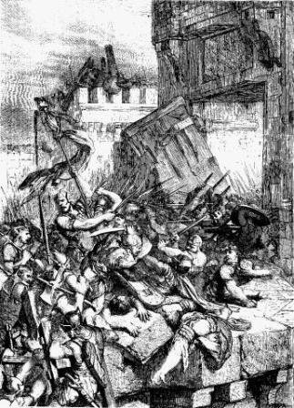

شُروعات م ۔ ۔ ۔
بائبل جي پهرين ڪتاب جو نالو، پيدائش، مطلب آهي شروعات. پيدائش جا پهريان ٻه باب اسان کي ٻڌائين ٿا ته خدا ڪائنات پيدا ڪئي: تارا، زمين ۽ ٻيا سڀ سيارا، ۽ هر جاندار شيءِ جيڪا آهي يا ڪڏهن هئي. خدا جي سڀ کان خاص تخليق انسان هئي: ماڻهو. ماڻهو خاص آهن ڇو ته اهي خدا جي پنهنجي تصوير ۾ ٺهيل آهن. (ڏسو پيدائش 1:26-27)

آدم ۽ حوا
پيدائش جو ٽيون باب ٻڌائي ٿو ته ڪيئن گناهه دنيا ۾ داخل ٿيو. آدم ۽ حوا، پهريون مرد ۽ پهرين عورت، ايمان آڻڻ جي ڪوشش ڪئي وئي ته خدا انهن سان ڪوڙ ڳالهايو هو. هن ڪوڙ کي مڃڻ سان، انهن کي پوء يقين ٿي ويو ته اهي حقيقت ۾ خدا وانگر ٿي سگهن ٿا. جڏهن خدا ڏٺو ته اهي نافرمان ٿي ويا آهن، آدم ۽ حوا هاڻي خدا سان کليل رشتي جو لطف اندوز نه ڪيو آهي جيڪو اهي هڪ ڀيرو هئا. گناهه کين خدا کان جدا ڪري ڇڏيو هو. ۽ ائين ئي هر ماڻهوءَ لاءِ آهي، سواءِ هڪ جي، جيڪو ان وقت کان جيئرو آهي: اسان سڀ گناهه جي ذريعي خدا کان جدا ٿي ويا آهيون.

خدا اڃا تائين اسان کي سندس حڪم نه ڏنو هو ته هو صحيح طريقي سان زندگي گذارين، ۽ ماڻهو جيئن اهي چاهيندا هئا. انسانيت جون سڀ تمدن تشدد ۽ هر قسم جي بي حيائي تي ٻڌل نظر اينديون هيون. پنهنجي اعليٰ ترين مخلوق جي نازڪ حالت ڏسي، خدا کي افسوس ٿيو ته هن مخلوق سان اهڙو سلوڪ ڪيو.
پيدائش جي باب 4 ۽ 5 انسانيت جي وڌندڙ بدڪاري جي اداس ڪهاڻي جاري رکي ٿي. خدا اڃا تائين اسان کي صحيح زندگي گذارڻ لاءِ سندس حڪم نه ڏنو هو، ۽ ماڻهو ائين ئي ڪندا هئا جيئن اهي چاهيندا هئا. سڄي تهذيب تشدد ۽ هر قسم جي بي حيائي کي ڇڏي ڏيڻ لڳي. جڏهن خدا پنهنجي آخري ٿڪائي جي اداس حالت کي ڏٺو، هن کي افسوس ٿيو ته هن اهڙي رويي کي چالو ڪيو هو.
نوح
جيئن ته خدا پنهنجي گنهگار مخلوق تي نظر انداز ڪيو، هن کي هڪ ماڻهو مليو جيڪو رب سان گڏ هلندو هو: نوح. خدا انسان کي ختم ڪرڻ جو فيصلو ڪيو ۽ نوح ۽ سندس خاندان سان نئين سر شروع ڪيو. پيدائش جا باب ڇهين کان اٺن ۾ ٻڌائي ٿو ته ڪيئن خدا سڀني انسانن کي ٻوڏ ۾ تباهه ڪيو، صرف نوح ۽ سندس زال ۽ انهن جي ٽن پٽن ۽ انهن جي زالن کي بچايو.
پيدائش جا باب نو کان يارهن تائين اسان کي اها ڪهاڻي مهيا ڪن ٿا ته ڪيئن نوح جي پٽن شيم، حم، ۽ يافٿ ٻوڏ کان پوء زمين کي آباد ڪيو. باب يارهن جي آخر ۾، اسان کي هڪ تمام خاص ماڻهوءَ سان متعارف ڪرايو ويو آهي، هڪ ماڻهو جنهن کي خدا ڪنهن قوم جو پيءُ سڏيندو، جنهن کي هو پنهنجو سڏي سگهي ٿو.


ابراهيم
پيدائش ۾، بائبل اسان کي ڪيترن ئي ماڻهن جي باري ۾ ٻڌائي ٿو جيڪي نوح وانگر "خدا سان گڏ هلندا هئا". خدا سان گڏ ھلڻ لاءِ ايمان جي ضرورت آھي: ھڪڙو بي پرواھ يقين آھي ته خدا اھو ڪندو جيڪو اھو انجام ڏيندو. نوح کي يقين ڪرڻ لاء ته خدا زمين جي سڄي آبادي کي ٻوڏ سان تباهه ڪري ڇڏيندو ۽ خدا جي هدايتن تي عمل ڪرڻ لاء هڪ ٻيڙي (هڪ وڏي ٻيڙي) ٺاهي، جڏهن هن جي چوڌاري ماڻهو ڪم ڪري رهيا هئا ته هو هن کي مذاق ڪندا هئا. تمام گهڻو ايمان. پيدائش باب 12 ۾، اسان هڪ ٻئي انسان جي باري ۾ سکندا آهيون جنهن تي خدا کي وڏو يقين هو: ابراهيم.
خدا ابراھيم کان گھڻو پڇيو (خدا بعد ۾ ھن جو نالو تبديل ڪري ابراھيم رکيو): ھن ابراھيم کي چيو ته پنھنجو وطن ڇڏي وڃي ۽ اھڙي جاءِ ڏانھن ھليو، جتي ھن ڪڏھن به نه ڏٺو ھو، جتي کيس ڪو به نه لھندو. سندس فرمانبرداري جي ڪري، خدا ابراهيم سان ٻه واعدو ڪيا:
خدا ابراهيم کان گهڻو پڇيو (خدا بعد ۾ هن جو نالو تبديل ڪري ابراهيم رکيو): هن ابراهيم کي چيو ته هو پنهنجو گهر ڇڏي وڃي ۽ اهڙي جاءِ ڏانهن هليو وڃي جتي هن ڪڏهن به نه ڏٺو هو، جتي هن کي ڪنهن کي به خبر نه هئي. هن جي فرمانبرداري لاء، خدا ابراهيم سان ٻه واعدو ڪيا:
- اهو ته هو ڪنعان جي ملڪ (جنهن کي اسان هاڻي اسرائيل سڏين ٿا) ابراهيم ۽ سندس اولاد کي ڏيندو.
- ته حضرت ابراهيم جي اولاد مان هڪ عظيم قوم پيدا ٿيندي.
ابراهيم جي ذهن ۾، اهي ٻئي واعدو ضرور انهن سان گڏ مسئلا هئا. ڪنعان جي زمين اڳ ۾ ئي ٻين ڪيترن ئي ماڻهن جي ملڪيت هئي، ۽ ابراهيم ۽ سندس زال کي ڪوبه اولاد نه هو. ۽ ابراھيم جي زال، سارہ، ٻارن کي کڻڻ لاء تمام پراڻي ھئي. اڃا تائين، ابراهيم کي يقين هو، ۽ تنهنڪري هو ۽ هن جو سڄو خاندان کنعان ڏانهن روانو ٿيو.
جيڪڏھن توھان پڙھو ابراھيم جي ڪهاڻي پيدائش باب 12-23 ۾، توھان ڏسندؤ ته ابراھيم جو ايمان ڪامل نه ھو: هن ڪڏهن ڪڏهن خدا ۽ سندس وقت تي انتظار ڪرڻ بدران "معاملو پنهنجي هٿن ۾ ورتو". اڃان تائين، اسان پيدائش 15 باب 6 آيت ۾ پڙهندا آهيون، "ابرام خداوند تي ايمان آندو، ۽ اهو هن کي صداقت جي طور تي تسليم ڪيو ويو."
جيتوڻيڪ جڏهن اهو آسان ناهي، جيتوڻيڪ جڏهن اسان رستو نه ڏسي سگهون ٿا، خدا اسان کي هن تي ڀروسو ڪرڻ لاء پڇي ٿو.

جيئن خدا واعدو ڪيو هو، ساره کي هڪ پٽ ڄائو هو. هن ۽ ابراهيم هن جو نالو اسحاق رکيو. سندس پوڙھيءَ ۾ به سارہ کي اولاد ٿيڻ تي خوشي ھئي.
جڏهن اسحاق وڏو ٿيو ۽ شادي ڪئي، هن کي ٻه پٽ هئا، جيڪب ۽ عيسو (پيدائش 25: 19-30).
يعقوب کي ٻارهن پٽ هئا (توهان انهن جي نالن جي فهرست پيدائش 35:23-26 ۾ ڳولي سگهو ٿا). انهن پٽن جا نالا بني اسرائيل جي ٻارهن قبيلن جا نالا هوندا. (خدا اصل ۾ يعقوب جو نالو بدلائي بني اسرائيل رکيو - پيدائش 35:10.) انهن ٻارهن پٽن جي ذريعي، خدا ابراهيم کي پنهنجي قوم مان هڪ عظيم قوم بڻائڻ جو واعدو پورو ڪيو.

موسي
يعقوب جي پٽن مان هڪ، يوسف، مصر ڏانهن ويو ۽ فرعون جي درٻار ۾ هڪ اعلي آفيسر ٿيو (توهان ان بابت پيدائش 37-50 ۾ پڙهي سگهو ٿا. اها هڪ ڊگهي ڪهاڻي آهي، پر جرئت سان ڀريل آهي). آخرڪار، يوسف جا سڀئي يارنهن ڀائر به مصر ڏانهن روانا ٿيا. جيستائين يوسف جيئرو هو، سندس خاندان فرعون سان تعلق جي ڪري چڱي طرح رهندو هو.
يوسف جي وفات کان پوءِ ٻيا نسل به پيدا ٿيا ۽ هڪ نئون فرعون اقتدار ۾ آيو جنهن کي اها خبر نه هئي ته يوسف شاهي خاندان جو احسان مند هو. هن نئين فرعون ڏٺو ته يهودين (بني اسرائيلن کي يهودي يا يهودي قوم به سڏيو ويندو هو) جو تعداد تمام گهڻو وڌي چڪو هو. انهيءَ ڪري هن کي ڊپ ٿيو ته هو هن جي حڪمراني تي غالب نه اچن، تنهن ڪري هن مصر ۾ سڀني اسرائيلن (يهودين) کي غلام بڻائي ڇڏيو.

نڪتل 2 باب 23 آيت ۾، بائبل اسان کي ٻڌائي ٿو ته بني اسرائيلن مصر ۾ غلامن وانگر تمام گهڻو ڏک ڪيو. انھن پنھنجي قوم کي بچائڻ لاءِ خدا ڏانھن رڙ ڪئي، ۽ خدا انھن کي ٻڌو. هن يهودين مان هڪ شخص کي چونڊيو جيڪو اسرائيل کي غلاميء کان نجات ڏي. ان شخص جو نالو موسيٰ هو.
ابراھيم جي برعڪس، جيڪو خدا جي سڏ کي ٻڌندو ھو، موسي پھريائين ڪوشش ڪئي تہ خدا کي ڪنھن ٻئي کي استعمال ڪري (خروج 4: 1-14).
خدا موسيٰ کي ڏيکاريو ته اهو خدا هوندو، نه موسي، جيڪو اصل ۾ فرعون جي هٿ کي يهودي غلامن کي آزاد ڪرڻ لاءِ مجبور ڪندو. موسى خدا جو واحد رسول هوندو.
مصر ۾، اهي ڪيترن ئي ديوتا، بتن جي پوڄا ڪندا هئا، نه ابراهيم، اسحاق ۽ جيڪب جي خدا جي. جڏهن موسي پهريون ڀيرو فرعون وٽ پهتو (نڪتل 5)، فرعون طعنو ڏنو: "ڪير آهي رب، جو مان هن جي فرمانبرداري ڪريان؟"
آزاد ڪري. تنهن هوندي به، هن ڀيري، موسيٰ پاڻ سان گڏ خدا جي طرفان هڪ ڊيڄاريندڙ کڻي ويو: جيڪڏهن فرعون بني اسرائيلن کي آزاد ڪرڻ تي راضي نه ٿيو، ته خدا مصر تي نون آفتن جو سلسلو جاري ڪري ڇڏيندو، تباهي، بيماري ۽ اونداهين جون آفتون. حيرت جي ڳالهه اها آهي ته انهن سڀني آفتن جي خوفناڪ اثر کان پوءِ به فرعون خدا جي قدرت کي مڃڻ کان انڪار ڪيو ۽ يهودين کي آزاد نه ڪيو. (خروج 7 باب 15 آيت - خروج 11)
اهو صرف ڏهين طاعون، طاعون (نڪتل 12) کان پوء هو، فرعون آخرڪار مصر جي غلامن کي آزاد ڪرڻ تي اتفاق ڪيو. مصر ۾ هر گهر جي پهرئين پٽ کي قتل ڪيو ويندو. بهرحال، خدا يهودين جي پهرين پٽن کي بچايو. هن کين هدايت ڪئي ته هو هڪ گهوڙي جي قرباني ڪن ۽ ان جو رت پنهنجن گهرن جي دروازن تي رنگين. جڏهن خدا پهرئين پٽن کي مارڻ لاءِ آيو هو، هو سڀني بني اسرائيلن جي گهرن کي "لنگهي" ڇڏيندو، جن هن جي هدايتن تي عمل ڪيو هو ته انهن جي دروازن تي گھيٽي جو رت وجهي.
اڄ ڏينهن تائين، يهودي هر سال فسح جو جشن ملهائي رهيا آهن ان معجزي کي ياد ڪرڻ لاء جيڪي انهن کي غلاميء کان آزاد ڪرڻ ۾ مدد ڪئي.

موسى جي اڳواڻي ۾، يهودين پنهنجو سفر مصر کان ٻاهر شروع ڪيو. خدا جي هٿ تي مصر ۾ جيڪو ڪجهه ٿيو، فرعون يهودين کي غلامي ۾ رکڻ جي هڪ آخري ڪوشش ڪئي.
مصري فوج بني اسرائيلن کي ڳاڙهي سمنڊ ڏانهن ڇڪايو، سوچيو ته انهن کي پاڻي ۾ ڦاسي ڇڏيو هو (نڪتل 14). بني اسرائيل خوفزده ٿيڻ شروع ڪيو، پر موسيٰ انهن کي زور ڏنو ته هو پنهنجي خدا تي ايمان آڻين. خدا موسيٰ کي حڪم ڏنو ته پنهنجي لٺ کي پاڻيءَ ڏانهن وڌائين. معجزاتي طور تي، ڳاڙهي سمنڊ جو پاڻي جدا ٿي ويو، خشڪ زمين لاء رستو ٺاهيندي جنهن ذريعي اهي ٻئي پار ڪري سگهندا هئا. جڏهن فرعون جي لشڪر ان رستي تان گذرڻ جي ڪوشش ڪئي ته سمنڊ جو پاڻي ٻنهي پاسن کان ڪري پيو ۽ سڀني کي غرق ڪري ڇڏيو. آخرڪار، بني اسرائيل مصر جي غلاميء کان آزاد ٿي ويا.
۽، جيئن خدا موسى کي ٻڌايو ته جڏهن هن پهريون ڀيرو کيس سڏيو، اهو خدا جو طاقتور هٿ هو جنهن اهو سڀ ڪجهه ڪيو!

ڏهه حڪم
جيئن ته اسان وڏي ٻوڏ جي ڪهاڻي ۾ پڙهي سگهون ٿا، خدا اڃا تائين پنهنجن قانونن کي انسانن کي نه ڏنو هو. جڏھن يھودي انھيءَ ملڪ ڏانھن وڃڻ شروع ڪيو جنھن جو خدا ابراھيم ۽ سندس اولاد سان واعدو ڪيو ھو، خدا موسيٰ کي جبل سينا جي چوٽيءَ تي چڙھڻ جو حڪم ڏنو. اتي، جبل سان گڏ دونھون سان ڍڪيل ماڻھن کي خدا جي زبردست جلال کان بچائڻ لاء، موسي پنھنجي ماڻھن لاء خدا جا حڪم حاصل ڪيا (خروج 20: 1-17).
بس ڇاڪاڻ ته يهودين کي مصر کان وڌيڪ غلام نه ڪيو ويو، مطلب اهو ناهي ته انهن جون سڀئي مشڪلاتون ختم ٿي ويون آهن. انهن جي ملڪ ڏانهن سفر جي ڪهاڻي جنهن جو خدا انهن سان واعدو ڪيو هو چاليهن سالن جي عرصي تي محيط آهي!
بني اسرائيلن جو ايمان ڪمزور هو. اهي اڪثر شڪ ڪندا هئا ته ڇا خدا انهن کي فراهم ڪندو. اهي ڪڏهن ڪڏهن ايترو مايوس ٿي ويا هئا، اهي اصل ۾ مصر ڏانهن واپس وڃڻ جي ڳالهه ڪندا هئا! ۽، شايد سڀ کان وڌيڪ خراب، انهن پوڄا ڪرڻ لاءِ بت به ٺاهيا، ڇاڪاڻ ته اهي خدا جا ڏاڍا شڪي هئا.

موسى جي موت جو قصو جي 34 هين باب ۾ درج آهي. اهو استشنا جي ڪتاب ۾ آهي ته خدا انهن قانونن تي وڌائي ٿو جيڪي هن پنهنجي ماڻهن کي سينا جبل تي ڏنو. هو بيان ڪري ٿو ته ماڻهو ڪيئن پنهنجن ساٿي يهودين جي وچ ۾ هلندا هئا ۽ ڪيئن اهي خدا جي عبادت ڪندا هئا.